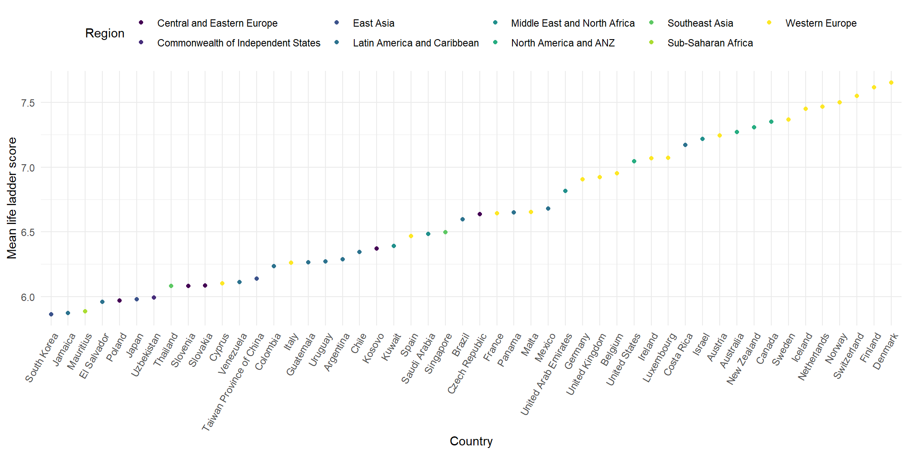

Visualization
Life Ladder Scores for Different Regions
We want to first get a general sense about the differences among life ladder scores for different regions by plotting the mean life ladder score for each region throughout the years.
region_ladder =
happ_df %>%
group_by(regional_indicator) %>%
summarise(mean_ladder_score = mean(ladder_score)) %>%
mutate(regional_indicator = fct_reorder(regional_indicator, mean_ladder_score, .desc = TRUE)) %>%
ggplot(aes(x = regional_indicator, y = mean_ladder_score, fill = regional_indicator)) +
geom_bar(stat = "identity", show.legend = FALSE) +
coord_flip() +
labs(y = "Mean life ladder score",
x = "Region",
title = "Mean Life Ladder Score for Different Regions")
region_ladder From the years 2005 to 2021, North America and ANZ region has the
highest mean life ladder score. Western Europe region has the second
highest mean ladder score and is close to North America and ANZ’s.
Sub-Saharan Africa and South Asia have the two lowest mean life ladder
scores in which Sub-Saharan Africa has the lowest mean life ladder
score.
From the years 2005 to 2021, North America and ANZ region has the
highest mean life ladder score. Western Europe region has the second
highest mean ladder score and is close to North America and ANZ’s.
Sub-Saharan Africa and South Asia have the two lowest mean life ladder
scores in which Sub-Saharan Africa has the lowest mean life ladder
score.
After getting an idea of the differences of mean life ladder score among different regions, we want to explore the distribution of life ladder score on each region across the years.
happ_df %>%
filter(year != 2005) %>%
ggplot(aes(x = year, y = ladder_score, group = year)) +
geom_boxplot() +
theme(axis.text.x = element_text(angle = 90, vjust = 0.5, hjust = 1)) +
facet_wrap(~regional_indicator, nrow = 2) +
labs(
x = "Year",
y = "Life ladder score",
title = "Life Ladder Score for Different Regions Across Years"
) With the initial idea that the mean life ladder score of North America
and ANZ being the highest, we can see that each year the life ladder
score of North America and ANZ region has similar distribution around 7.
For Sub-Saharan Africa, it also has similar distribution in life ladder
score around 4 across the years.
With the initial idea that the mean life ladder score of North America
and ANZ being the highest, we can see that each year the life ladder
score of North America and ANZ region has similar distribution around 7.
For Sub-Saharan Africa, it also has similar distribution in life ladder
score around 4 across the years.
happ_df %>%
group_by(country_name, regional_indicator) %>%
summarise(mean = mean(ladder_score)) %>%
ungroup() %>%
top_n(50, mean) %>%
mutate(country_name = fct_reorder(country_name, mean)) %>%
ggplot(aes(x = country_name, y = mean, color = regional_indicator)) +
geom_point(stat = "identity") +
theme(axis.text.x = element_text(angle = 60, vjust = 1, hjust = 1),
legend.position = "top") +
labs(x = "Country",
y = "Mean Life Ladder Score",
color = "Region")## `summarise()` has grouped output by 'country_name'. You can override using the `.groups`
## argument.